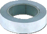
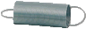
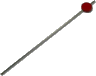
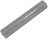
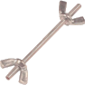
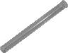

LDM
Contenido Maletín "F"
Maletin "F"
Maletin "F1"
| IMAGEN | ARTICULO | CANTIDAD | UBICACIÓN SUGERIDA (MALETÍN) |
 |
Carro de experimentación de 50 gr. con sujetador para adicionar masas. |
2 | F |
Platillos de balanza |
2 | F | |
Escala con graduación |
1 | F | |
 |
Vaso de precipitados 100 ml graduado |
1 | F |
Banda plana elástica 0.4 mm L= 160mm |
1 | F | |
Carrito con motor conducido por batería (incluida) para experimentos de movimiento uniforme. |
1 | F | |
|  | Rollo de 30 cm. de papel metálico para el registrador intermitente de tiempo. |
1 | F |
 |
Motor con lengua para experimentos de oscilación |
1 | F |
Resorte plano endurecido de acero inoxidable 300 x 25 x 0.6 mm. |
1 | F | |
|  | Resorte de acero al carbón 3N/m con terminación en gaza. |
1 | F |
Resorte de acero al carbón 20N/m con terminación en gaza. |
1 | F | |
Tubo de Plástico de 1 m |
1 | F | |
Amortiguador en acero resistente para experimentos de choques elásticos. |
2 | F | |
 |
Muelle plano para 2 carritos en acero endurecido. |
2 | F1 |
 |
Cinta de medición 300 mm con carcasa de plástico. |
1 | F |
|  | Apuntador para palanca |
1 | F1 |
 |
Unidad de deslizamiento para palanca |
1 | F1 |
 |
Tubo de manómetro de 200 x 8 mm de acrílico |
2 | F1 |
|  | Tubo de acrílico de 120 x 20 mm |
1 | F1 |
Juego de 3 tubos capilares |
1 | F1 | |
Juego de Poleas (4 piezas) |
1 | F1 | |
Tubo de acrílico de 80 x 8 mm |
1 | F1 | |
Tubo de Plástico 16 cm |
1 | F1 | |
 |
Recibidor de pesas ranuradas. |
1 | F1 |
Tramo de goma de 300 cm. |
1 | F1 | |
Receptor de pluma para realizar experimentos de oscilación. |
1 | F1 | |
|  | Varilla tratada con nuez de mariposa para fijar las pesas al resorte plano. |
1 | F1 |
 |
Varilla en níquel 60 x 10 mm. |
1 | F1 |
|  | Tubo de ensayo 16X160 mm |
1 | F1 |